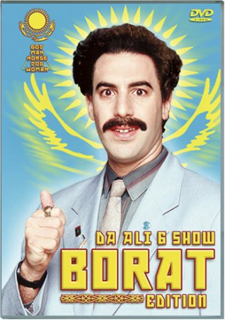

#11818 Da Ali G Show - Borat Edition
Auszeichnungen: 2 BAFTA-Awards gewonnen
 
 IMDB-Wertung: 8.0 / 10
IMDB-Wertung: 8.0 / 10  Metascore: 0
Metascore: 0 
Mit seiner politisch inkorrekten Comedy-Show auf Channel 4 hat der Comedian Sacha Baron Cohen alias Ali G bereits in Großbritannien für Furore gesorgt und innerhalb kürzester Zeit Kultstatus erreicht. Nach erfolgreichen Ausstrahlungen in vielen europäischen Ländern sowie in Australien, Neuseeland und Südafrika ist das Format auch in den USA zu sehen. „Da Ali G Show“ wurde mit zahlreichen Fernsehpreisen ausgezeichnet, darunter zwei British Academy Awards und die Bronzene Rose von Montreux.
Sacha Baron Cohen ist wieder da! Als kasachischer Reporter Borat ist er im Dienste seines Präsidenten für die ruhmvolle Nation Kasachstan unterwegs. Der lustigste Mann der Welt, der über 1,5 Mio. Deutsche ins Kino lockte, sucht an der Uni Cambridge nach Prostituierten-Partys, stellt sich im Fitnessstudio für Schwule etwas ungeschickt an und bringt bei der englischen Fuchsjagd den jagenden Adel ebenso wie gut meinende Tierschützer gegen sich auf. In über 160 Minuten "Da Ali G Show" blasen auch Cohens Charaktere Ali G sowie Bruno, der schwule Österreicher zum politisch inkorrekten Angriff auf die Lachmuskeln. Zu den Opfern ihrer satirischen Auftritte werden US-Politiker, das FBI, Hollywood-Produzenten, Mode-Designer und Waffenfanatiker.
Jahr: 2000
Dauer: 83 Minuten
FSK: 12
Land: England Studio: Channel 4 Television CorporationTonspuren:
Untertitel:
Auflösung: SD (640x464) Größe: 698 MB
Genre: Komödie, Dokumentation,
Regisseur: James Bobin, Dan Mazer, Steve Smith
Drehbuch: Sacha Baron Cohen, James Bobin, Jamie Glassman, Anthony Hines, Dan Mazer
Soundtrack:
Darsteller:
 Sacha Baron Cohen als Ali G, 18 episodes, 2000-2004
Sacha Baron Cohen als Ali G, 18 episodes, 2000-2004- James Baker III als Himself, 2 episodes, 2003
- Marlin Fitzwater als Himself, 2 episodes, 2003
 Buzz Aldrin als Himself, 2 episodes, 2003
Buzz Aldrin als Himself, 2 episodes, 2003- Jarvis Cocker als Himself, 2 episodes, 2000
- Tamzin Outhwaite als Herself, 2 episodes, 2000
 James Lipton als Himself, 1 episode, 2003
James Lipton als Himself, 1 episode, 2003- Jennifer Defrancisco als Herself, 1 episode, 2003
- Jonathan Antin als Himself, 1 episode, 2003
- Chrissie Hynde als Herself, 1 episode, 2000
- Jenna Jameson als Herself, 1 episode, 2000
- Jonathan Kydd als The Judge, 1 episode, 2000
- Robert L. Levy als Himself, 1 episode, 2000
- Terese Linden Kohn als Herself, 1 episode, 2000
- Thomas Pickard als Himself - Assistant Director, FBI, 1 episode, 2000
- Gail Porter als Herself, 1 episode, 2000
- Sally Jessy Raphael als Herself, 1 episode, 2000
- Marissa Tait als Herself, 1 episode, 2000
- Gisele Bündchen als Herself, 1 episode, 2003
- Clint Catalyst als Himself, 1 episode, 2003
- Sophie Dahl als Herself, 1 episode, 2003
- Newt Gingrich als Himself, 1 episode, 2003
- Carolina Herrera als Herself, 1 episode, 2003
- Kent Hovind als Himself - Creationist, 1 episode, 2003
- Ed Meese als Himself - Former US Attorney General, 1 episode, 2003
- Ralph Nader als Himself, 1 episode, 2003
- Brent Scowcroft als Himself - National Security Advisor, 1982 - 89, 1 episode, 2003
- Donald Trump als Himself, 1 episode, 2003
- Pat Buchanan als Himself, 1 episode, 2004
- Daniel DiCriscio als Himself, 1 episode, 2004
- Sam Donaldson als Himself, 1 episode, 2004
- Daryl Gates als Himself, 1 episode, 2004
- Leon Hall als Himself, 1 episode, 2004
- Andrew Rooney als Himself, 1 episode, 2004
- Gore Vidal als Himself, 1 episode, 2004
- Porter Wagoner als Himself, 1 episode, 2004
- Christine Todd Whitman als Herself, 1 episode, 2004
- Leonard Maltin als Himself (uncredited), 1 episode, 2000
- Janice Dickinson als Herself (uncredited), 1 episode, 2003
 Paris Hilton als Herself (uncredited), 1 episode, 2003
Paris Hilton als Herself (uncredited), 1 episode, 2003 Tara Reid als Herself (uncredited), 1 episode, 2003
Tara Reid als Herself (uncredited), 1 episode, 2003- Nicky Rothschild als Herself (uncredited), 1 episode, 2003
- Steve Ellington als Himself, 6 episodes, 2000
- T.N.T. Crew als Musicians, 6 episodes, 2000
- Charles Dicagno als Himself, 2 episodes, 2003
- Arthur Danto als Himself, 1 episode, 2003
- Keith Lawrence als Himself, 1 episode, 2003
- Lee Levinson als Himself, 1 episode, 2003
- Jane Thornhill als Herself, 1 episode, 2003
- Tee Woolman als Himself, 1 episode, 2003
Datei: X:\Dokumentationen\Comedy\Da Ali G Show - Borat Edition (2000, FSK12, 640x464) - CD1.avi seit 24.09.2019
Festplatte: HD Serien(SU-Z)+Dokus+Musik
 Es gibt insgesamt 30 Filme in der Gruppe 'Dokumentationen\Comedy'
Es gibt insgesamt 30 Filme in der Gruppe 'Dokumentationen\Comedy'